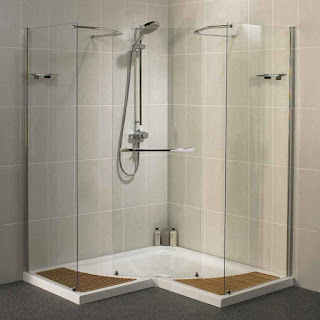
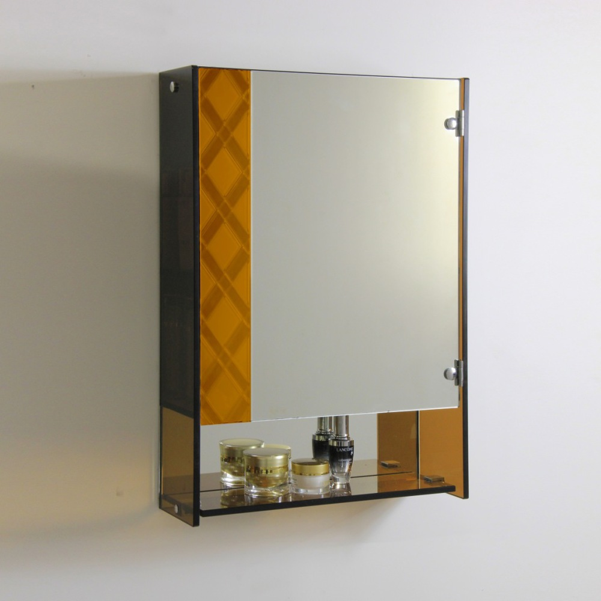

Kian berkembangnya dunia pembangunan, karenanya hadir banyak material penambah yang melengkapi keindahan sebuah banguanan. Tetapi, tidak hanya estetika tetapi juga keamanan bagi penghuni di dalamnya. Tidak halnya hadir pelbagai material kaca dan juga lantai yang semakin melengkapi skor estetika sebuah bangunan. Berikut sedikit penjelasan yang dapat anda baca mengenai sebagai rujukan and ajika akan membangun rumah ataupun tempat usaha.
Kini sudah hadir beraneka maca variasi kaca yang bisa dijumpai, tiap-tiap kaca memiliki fungsinya masing-masing. Bisa untuk system keamanan, keindahan dan masih banyak yang dapat di dapatkan dari pemasangan kaca. Variasi kaca-kaca hal yang demikian diantaranya adalah kaca tempered, kanopi kaca, kaca frameless, kaca cermin, railing kaca dan masih banyak jenis kaca lainnya yang dapat anda dapatakan dan anda aplikasikan pada bangunan. Semua material hal yang demikian bisa di aplikasikan harga sebuah hunian terlihat lebih indah nyaman dan juga aman.
Distributor & Supplier Pintu Lipat Kaca Bojonegoro

Pastinya anda telah mengenal banyak kelebihan dari kaca tempered.Pintu lipat kaca diterapkan saat ruangan dipakai untuk hal yang privacy. Anda dapat mencari model pintu lipat kaca tempered minimalis lainnya. Ragam kaca nomor 6 ini betul-betul disarankan untuk diciptakan sebagai bahan membuat pintu lipat kaca.
Harga pintu kaca lipat Bojonegoro frameless ini betul-betul dipengaruhi oleh ukuran lebar dan tingginya pintu. Namun bukan itu saja, aksesoris pelengkap juga berakibat. Anda semestinya menentukan aksesoris yang melengkapi pintu kaca lipat Bojonegoro memiliki kwalitas terbaik, seperti figur hinges.
Distributor & Supplier Kaca Shower

Kaca shower sekarang menjadi suatu hal yang banyak diminati karena banyak orang yang menginginkan sebuah kamar mandi yang mempunyai fungsi selain keindahan ialah kenyamanan. Dan sensasi mandi menjadi lebih asik untuk dinikmati. Tak cuma menawan tetapi kaca shower bisa menjadi kaca pembatas antara lantai kering dan berair pada kamar mandi. Penyekat ini akan memisahkan antara tempat basah yang diterapkan untuk mandi atau meletakan shower dan daerah lain yang merupakan zona kering. Kelebihan shower screen dibanding dengan sistem penyekatan yang lain yakni dijadikan dalam wujud yang sudah jadi dan tinggal dipasang saja. Kita tak perlu repot lagi mencari tukang sendiri sebab pemasangan alat sekat ini memang membutuhkan teknik tersendiri.
Tak anda sedang mencari kaca shower untuk kamar mandi, anda bisa segera mengunjungi dis.or.id.
Distributor, Supplier & Jasa Pasang Kanopi Kaca
Salah satu ragam kanopi kaca yang bisa anda aplikasikan pada atap adalah atap kaca skylight yang yakni kanopi kaca dalam format jendela horizontal atau kubah yang lazimnya ditempatkan di atap bangunan yang mempunyai maksud untuk pencahayaan ruangan. Atap kaca skylight banyak diaplikasikan pada rumah, gedung, kantor, café yang mengusung gaya modern untuk membikin efek cahaya yang dramatis pada ruangan bagian bawahnya serta memberi kesan modern pada bangunan. Canopy kaca dengan atap kaca memang sebuah bangunan yang asangat elgan untuk jaman modern seperti kini ini dengan harga yang amat lumayan kalau di bandingkan kanopi atap biasa. Jadi telah tak heran lagi segala orang ingin mencari harga yang benar-benar kompetitif untuk menyesuaikan budget atau anggaran mereka masing – masing untuk membuat produk canopy kaca. Disinilah letak perbedaan optis yang utama antara akrilik (acrylic) dengan kaca. Jika tembus pandang, kaca menyerap sinar yang masuk sehingga kian tebal kaca maka kian sedikit sinar yang dapat melaluinya, maka sifat transparannya makin berkurang.|Di samping pintu kaca shower akan membuat kamar mandi kecil menonjol lebih besar. Pada atap akrilik, absorpsi cahaya yang terjadi demikian kecil sehingga walaupun ketebalannya bertambah, sifat transparannya tidak banyak berubah.
Tak anda berminat untuk memasang kaca kanopi pada rumah, gedung maupun kantor, anda bisa lantas mengunjungi dis.or.id. Disana anda dapat mendapatkan atap kanopi kaca dengan kualitas terbaik dan harga terjangkau. Jikalau itu, kanopi juga dapat melindungi mobil dan kendaraan lain anda. Disana anda akan mendapat kanopi kaca yang pantas dengan pelbagai ketebalan dan harga yang cukup terjangkau.
Jasa Maintenance Kaca
Jasa maintenance kaca ialah perusahaan yang akan menolong supaya gedung perkantoran Anda tampak seperti baru. Tidak kaca tidak kusam, karenanya kaca patut dibersihkan secara regular. Dis.or.id memiliki daya pakar yang dapat kapabel membersihkan gedung pencakar langit yang bangunannya terbuat dari kaca. Kekuatan yang di gunakan untuk jasa maintenance kaca diantaranya godole, rope access, crane, dan scaffolding.
Dis.or.id memahami semakin banyak gedung pencakar langit dengan betuk yang berbeda-beda. Untuk itu, alat-alat wajib lengkap sehingga kami sanggup membersihkan seluruh sudut gedung.
Jasa Pemasangan Kaca Tempered

Tidak anda mebutuhkan jasa maintenance kaca, anda bisa mengunjungi dis.or.id. Masyarakat telah mengerti keunggulan dari kaca ini. Untuk gedung perkantoran, komponen yang paling kerap kali dijadikan dengan bahan yang satu ini yakni jendela dan pintu. Namun dahulu cuma gedung perkantoran atau sentra perbelanjaan modern saja yang mengaplikasikan macam kaca ini, sekarang rumah hunian juga sudah dibangun dengan kaca tempered.
Sementara itu, untuk hunian, kanopi dan kamar mandi menjadi komponen yang paling menarik jikalau dijadikan dari bahan kaca tempered. Harga untuk tiap pemasangan dijamin termurah dan hasil progres yang layak dengan kemauan anda. Disana anda dapat memanfaatkan jasa pemasangan kaca tempered untuk segala tipe bidang ataupun bangunan. Dis.or.id menawarkan jasa pemasangan kaca tempered karena kami mempunyai alat yang lengkap.
Distributor & Supplier Pintu Kaca
Sekarang telah tersedia bermacam-macam jenis dan beragam figur pintu kaca yang sedang menjadi tren saat ini. Ada banyak desain pintu kaca yang bisa kita temui seperti pintu kaca berbentuk sliding (geser) atau folding (lipat). Tak Anda suka dengan pintu kaca dengan pigura, Anda bisa pilih apakah bingkai tersebut terbuat dari bahan kayu atau alumunium. Sekarang tidak kalah penting lagi ialah pemilihan kaca. Dalam hal ini, terdapat sebagian ragam kaca dengan mutu yang terbaik. Sekarang paling banyak diminati saat ini yakni kaca tempered sebab jauh lebih kuat dan bendung lama.
Dis.or id siap membantu anda untuk membuatkan pintu kaca idaman anda. Dengan tenaga pakar yang telah betul-betul handal dalam membuat bermacam-macam contoh pintu kaca.
Jual Kaca Cermin

Ini tak cuma sebagai kaca cermin persegi. Ada beberapa keunggulannya. Sekarang, cermin tidak cuma berbentuk persegi atau persegi panjang saja. Jadi, Anda mempunyai banyak pilihan untuk menetapkan cermin yang Anda pilih benar-benar bisa mempercantik interior rumah Anda.
Seandainya sebagai bahan untuk pintu kaca, kaca cermin ini juga masih diaplikasikan sebagai aksesoris cermin. Artinya, cermin hal yang demikian tidak memiliki frame atau frame. Banyak orang yang lebih menyukai dengan desain kaca cermin minimalis. Karenanya hanya persegi atau persegi panjang. Tak contoh lemari baju di mana komponen pintunya terbuat dari kaca cermin. Tersedia kaca cermin dengan beragam ukuran yang dapat anda pesan di dis.or.id. Melainkan, Anda bisa melihat orang lain dari dalam rumah. Tapi kunjungi dan temukan kabar menarik mengenai kaca cermin impian anda. Tapi kunjungi dis.or.id untuk menerima penawaran menarik.
Jasa Pemasangan Railing Kaca
Railing kaca kini semakin banyak pilihannya. Tak rumah Anda sudah dibangun dengan desain minimalis, karenanya tidak salah ketika railing, entah itu railing tangga dan balkon terbuat dari kaca. Maka dari itu, bagian-komponen tangga tak lagi diciptakan dengan bahan kayu. Anda dapat mengerjakan eksplorasi dengan menerapkan bahan berupa kaca dikala mau memiliki rumah dengan desain minimalis. Mereka tak lagi membuat pagar tangga atau balkon dari kayu. Kaca ragam yang satu ini telah terkenal dengan ketahanannya. Tak kaca ini pecah, pecahannya halus sehingga tak akan melukai orang. Namun kaca pecah, kaca tempered tak akan melukai orang yang terkena kaca tempered hal yang demikian lantaran pecahan demikian itu kecil dan lembut, tidak berupa kepingan yang runcing.
Dalam hal ini, Anda dapat memutuskan sendiri berapa ketebalan dari kaca yang diterapkan tersebut. Anda dapat pertimbangkan untuk menerapkan kaca tempered. Ada kaca tempered yang sekarang diminati banyak orang. Kaca ini sungguh-sungguh kuat dan juga aman. Dengan demikian, pecahan kaca tempered tak akan melukai orang yang terkena pecahan. Jikalau kaca, observasi juga aluminum yang menjadi framenya. Ini memastikan kuatnya konstruksi railing kaca. Bila memberikan kesan minimalis pada interior rumah, ini juga membuat rumah Anda nampak lebih nyaman untuk diciptakan tempat tinggal.
Bagi anda yang sedang mencari railing kaca dengan kualitas terbaik, anda bisa lantas kunjungi dis.or.id. Harga yang sangat ekonomis serta kualitas terbaik yang telah terjamin membuat anda tak akan menyesal membeli railing kaca di dis.or.id. Tentu dengan harga yang murah melainkan konsisten berkelas.
Jasa Pemasangan Kubikel Toilet

Saat ini banyak desain toilet yang didominasi oleh kubikel/cubicle yang mempunyai tampilan lebih modern dan mewah. Banyak profit yang dapat di daptkan dengan menggunakan kubikel toilet diantaranya merupakan tampilan yang lebih elegan dan lebih bersih.
Dengan menerapkan kamar kecil kubikel tentnya kamar kecil yang anda miliki Kelihatan lebih elegan dan mewan jauh dari kesan dekil. Dengan memakai kamar kecil kubikel pada hunian ataupun gedung yang anda miliki tentunya banyak kelebihan yang anda daptkan yakni harga kubikel yang lebih murah dibandingi dengan bahan konvensionel lainnya. Kaca sebagai penyekat dalam kamar mandi awam disebut kaca shower. Kaca shower banyak digunakna karena memberikan kesan mewah.
Harga yang ditawarkan pun cukup relatif murah.
Karena disana terdapat beraneka ukuran kubikel toilet yang bisa anda jadikan alternatif untuk hunian atau temap usaha anda. Justru embun bisa merekat di kaca dan lambat laun dapat membikin kaca tak sejernih semula. Kaca shower yang di jual di jamin kaca shower yang mempunyai mutu terbaik dan berkwalitas tinggi.
Distributor & Supplier Partisi Kaca

Banyak rumah hunian yang sekatnya terbuat dari kaca. Belum lagi tarif pemasangan yang murah. Dalam hal ini, Anda tahu kaca apa yang baik untuk partisi. Selain itu, tentukan juga desainnya apakah partisi kaca tersebut frameless (tanpa bingkai) atau dengan pigura. Selain itu, pertimbangkan juga privacy. Ini yang akan membuat Anda menentukan hal yang pas apakah Anda menerapkan kaca transparan, semi transparan, atau kaca cermin. pemasangan lebih murah karena waktu yang tidak lama untuk memasang partisi yang terbuat dari kaca hal yang demikian. Dengan harga yang sangat berteman cocok dengan kantong anda, daripartisi kaca ini tidak perlu diragukan lagi. Sebagian kunjungi dis.or.id juga. Anda partisi kaca ini sebagai penyekat sebagian ruangan seperti kamar mandi dalam, taman dalam ruangan, ruangan bermain di dalam rumah, dan lain sebagainya. Selain itu, tentukan juga macam kaca yang berkeinginan digunakan apakah transparan, semi transparan, atau kaca cermin yang membikin ruangan betul-betul privat. juga dengan kaca. variasi kaca ini memutuskan privacy ruangan yang disekat. Ada kaca transparan, semi transparan, dan juga kaca cemin yang ruangan sangat privat. Sekiranya anda sedang mencari distributor dan supplier partisi kaca yang kaca dengan terbaik, anda tinggal mengunjungi dis.or.id.